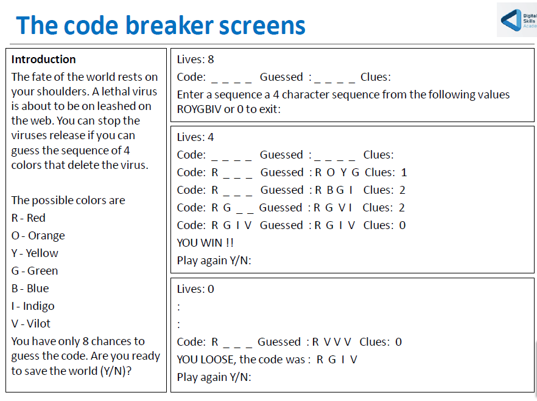

A variation on the mastermind game
The java OO Program assignment – code breaker
Write the code breaker program as per spec below with text based display using the Javabook class library
Following an introduction screen that explains the game. he game starts by choosing the code patch which is a sequence of four colours from the following available colours red(R), orange (O), yellow (Y), green (G), blue (B), Indigo (I), and violet (V). The code patch is not displayed to the user only 4 lines are displayed ( _ _ _ _ ) and lives = 8.
The user enters a string of four characters which is their guess at the sequence of 4 letters choosen by the computer.
The user input is compared to the code patch and the following feedback is provided:
- If the two code patches match, the game says YOU WIN, do you want to play again (Y/N)?
- If one or more colours between the two colour patches match, display the positions where the colours match. If the colour is correct but the position is wrong for one or more colours give the user a clue as to how many colours there are in the in the users patch that are not in the correct position.If the same colour is used twice in the users patch and twice in the computers patch but the positions are wrong the clue will have a value of 2. if the colour patch has not been guessed then a life is lost and the user is asked : Enter a sequence a 4 character sequence from ROYGBIV or 0 to exit:
- If the number of lives is zero following this guess and the user has not won, then display, the code patch and. YOU LOOSE, do you want to play again (Y/N)?
- If instead of entering in a code sequence the user enters 0, or there are 0 in the code patch entered, exit the game (boss kill switch)
- If the same sequence is entered twice or more, inform the user that duplicate patches are not allowed and ask then to re enter a new code patch. No life is lose for a duplicate entry. Display the game as per the example screens on the next page.
